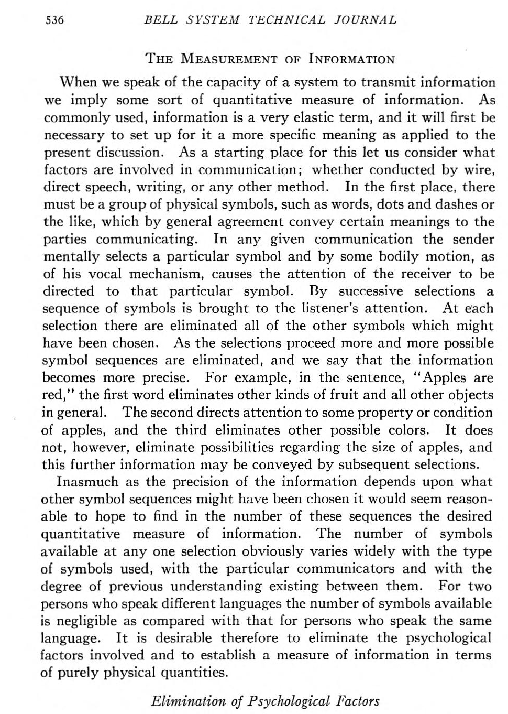
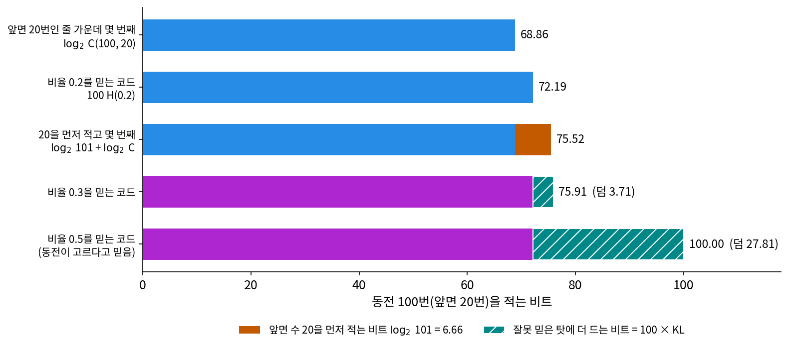
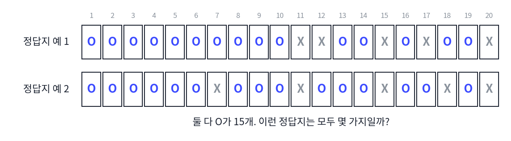
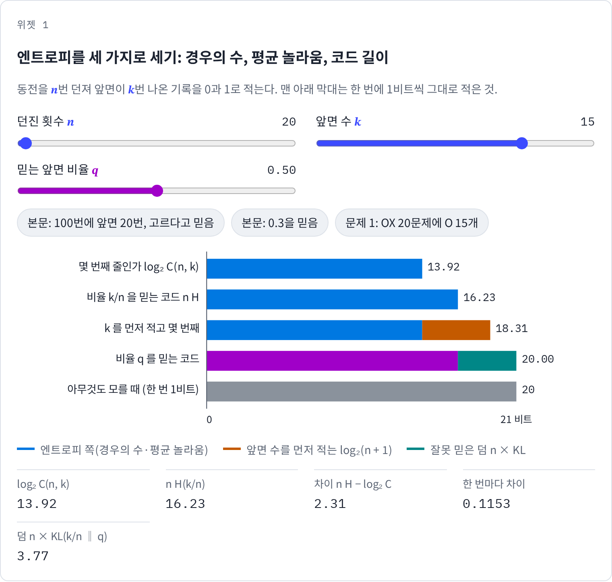
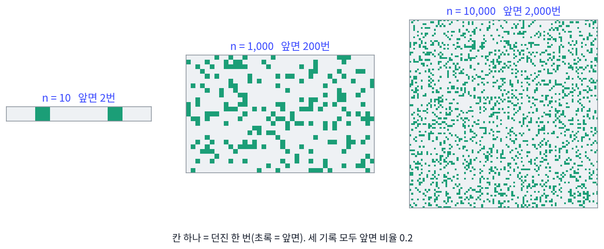
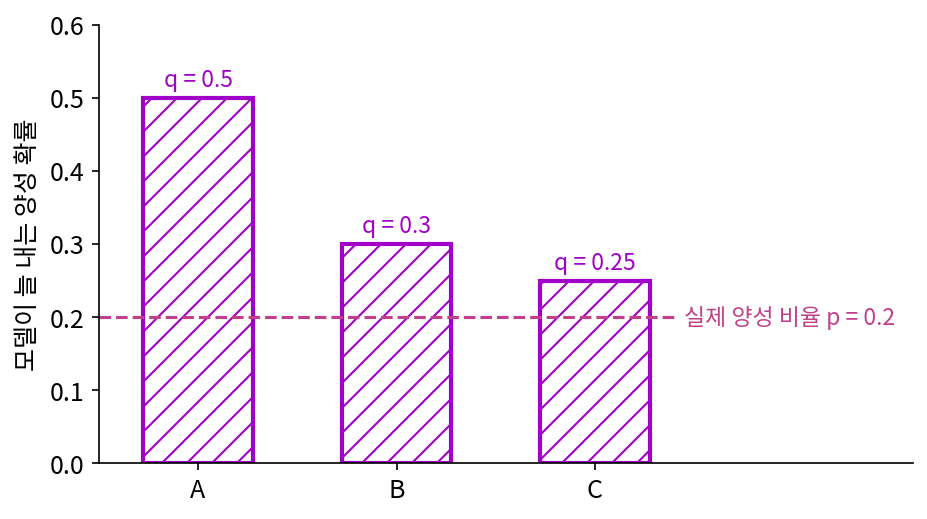

엔트로피: 경우의 수의 로그는 적는 데 드는 비트 수다
동역학에서 엔트로피는 경우의 수의 로그였다. 상자 속 기체의 거시 상태 하나에 해당하는 미시 상태가 W가지이면 엔트로피는 log W에 비례한다. 정보기하학에서 엔트로피는 평균 놀라움 −Σ p log p였다. 동역학의 엔트로피는 가짓수를 세는 이야기이고 정보기하학의 엔트로피는 확률로 놀라움을 평균하는 이야기인데, 두 책 모두 같은 이름을 썼다. 코드 길이를 다루면서 확률이 고르면 둘 다 log₂ W가 된다는 것은 이미 보았는데, 확률이 고르지 않을 때도 두 엔트로피는 같은 양일까? 그리고 두 책이 엔트로피 옆에 함께 세운 KL 발산은 압축의 말로 무엇일까?
역사: 뜻을 빼고 가짓수만 세기
섀넌보다 20년 앞서, 미국 벨 연구소의 하틀리(Ralph V. L. Hartley)는 1927년 9월 이탈리아 코모 호숫가의 국제 전신전화 학회에서 「정보의 전송(Transmission of Information)」을 발표했고, 이 글은 1928년 『벨 시스템 기술 저널』에 실렸다. 그는 전신, 전화, 사진 전송, 텔레비전이 정보를 얼마나 보낼 수 있는지를 한 잣대로 견주고 싶었다. 걸림돌은 「정보」라는 말이 사람마다 다른 것을 뜻한다는 데 있었다. 그의 예로, 말이 다른 두 사람이 한 번에 골라 쓸 수 있는 기호는 같은 말을 쓰는 두 사람에 비하면 거의 없다.

하틀리는 주고받는 사람에 따라 달라지는 이런 사정을 「심리적 요인」이라 부르고 일부러 셈에서 뺐다. 받는 쪽이 할 수 있는 일은 보낸 쪽이 고른 기호가 다른 기호가 아니라 그 기호라는 것을 가려내는 것뿐이라고 보고, 기호의 뜻은 묻지 않았다. 한 번에 고를 수 있는 기호가 s가지이고 n번 고르면 가능한 기호의 줄은 sⁿ가지다. 그는 정보의 양을 「가능한 기호 줄의 가짓수의 로그」로 정해 H = n log s라 적었다. 다섯 번 고르는 보도(Baudot) 전신 코드의 한 글자는 5 log 2, 100글자는 500 log 2다. 섀넌은 1948년 논문에서 「로그가 가장 자연스러운 잣대라는 것은 하틀리가 짚었다」고 그를 인용했다. 하틀리의 셈은 모든 줄이 똑같이 나올 수 있다고 본 셈이고, 기호마다 나오는 비율이 다를 때를 다룬 것이 섀넌의 엔트로피다.

가짓수에 로그를 씌우는 건 지금 보면 당연한데요. 보도 코드 한 글자가 다섯 칸이니까 5비트, 끝이잖아요.

그 「비트」라는 낱말이 1928년에는 없었어요. 섀넌의 1948년 논문이 튜키가 지은 말이라며 처음 소개하죠. 그래서 하틀리는 로그의 밑을 정하지 않고 5 log 2라고 적었어요. 그때 더 어려웠던 건 무엇을 셈에서 빼느냐였고요.

뜻을 빼는 거요? 음, 같은 말을 쓰는 사람끼리 기호를 더 많이 골라 쓸 수 있다면, 전신 기사한테는 뜻이 오히려 중요해 보였을 것 같은데요.

그래서 하틀리는 그 사정에 「심리적 요인」이라는 이름까지 붙여 일부러 뺐어요. 전신, 전화, 사진 전송, 텔레비전을 한 잣대로 견주려면 사람마다 다른 뜻을 셈에 넣을 방법이 없었으니까요.

그런데 모든 줄이 똑같이 나온다고 치면, 영어에서 e가 z보다 훨씬 자주 나오는 건 셈에 안 들어가잖아요.
하틀리의 식 H = n log s에는 기호마다 다른 확률이 들어갈 자리가 없어요. 나오는 비율이 다를 때를 다룬 건 20년 뒤 섀넌의 엔트로피예요.

그럼 하틀리의 「가짓수의 로그」와 섀넌의 「평균 놀라움」은, 비율이 고르지 않을 때도 같은 양이 될 수 있어요?
동전 100번, 앞면 20번
동전을 100번 던졌더니 앞면이 20번 나왔다. 이 기록(앞면을 1, 뒷면을 0으로 적은 100자리 줄)을 친구에게 0과 1로 보내려 한다. 아무것도 모르면 한 번에 1비트, 100비트다.
먼저 동역학의 방법으로 세어 보자. 친구가 「앞면이 20번」이라는 것을 이미 안다면, 남은 일은 앞면 20번인 줄 가운데 몇 번째 줄인지를 알려 주는 것이다. 그런 줄은 C(100, 20) = 535,983,370,403,809,682,970가지, 약 5.4 × 10²⁰가지다. 몇 번째인지를 이진수로 적으면 log₂ C(100, 20) = 68.86비트가 든다. 경우의 수의 로그가 그대로 적는 데 드는 비트 수다.
다음은 정보기하학의 방법이다. 앞면 비율 0.2를 믿고 한 번마다 앞면에는 −log₂ 0.2 = 2.32비트, 뒷면에는 −log₂ 0.8 = 0.32비트를 주는 코드(산술 코딩으로 그대로 낼 수 있다)로 적으면, 100번에 100 H(0.2) = 72.19비트가 든다. H(0.2) = 0.7219는 한 번마다의 평균 놀라움이다.
두 값이 다른 3.33비트는 어디서 왔을까? 「앞면이 20번」을 미리 알았느냐의 차이로, 72.19비트짜리 코드는 앞면이 19번이든 21번이든 쓸 수 있고 68.86비트짜리는 20번인 줄만 적는다. 공평하게 앞면 수 20을 먼저 적으면(0부터 100까지 101가지, log₂ 101 = 6.66비트) 두 부분 코드는 75.52비트가 된다. 세 값은 100비트짜리 기록 앞에서 몇 비트 차이로 붙어 있고, 셋 모두 「적는 데 드는 비트 수」다. 다른 것은 받는 쪽이 미리 아는 것뿐이다. 기록이 100자리에서 길어지면 이 몇 비트 차이가 어떻게 되는지, 그래서 두 엔트로피를 정말 같은 양이라 불러도 되는지는 아래 문제 2에서 잰다.
둘째 식이 KL 발산의 압축의 말이다. 실제 비율이 0.2인데 동전이 고르다고 믿고(q = 0.5) 코드표를 만들면 한 번마다 1비트, 100번에 100비트가 든다. 그중 72.19비트는 어떤 코드로도 피할 수 없는 비트(엔트로피)이고, 나머지 27.81비트가 잘못 믿은 덤 100 × KL(0.2 ‖ 0.5)다. 0.3을 믿으면 덤은 3.71비트로 주는데, 이처럼 믿음이 참 비율에 다가갈수록 덤은 0으로 줄고 덤이 음수가 되는 일은 없다.

ML에서: 학습이 줄일 수 있는 손실은 KL뿐이다
언어 모델의 크로스 엔트로피 손실을 둘째 식으로 읽으면, 손실은 글 자체의 엔트로피와 모델이 잘못 믿은 덤의 합이다. 학습이 줄일 수 있는 것은 덤인 KL뿐이고, 엔트로피는 모델을 아무리 키워도 남는다. 손실을 모델 크기와 자료 양의 함수로 맞추는 경험식인 스케일링 법칙에는 모델과 자료를 끝없이 늘려도 남는 상수 항이 따로 있는데, 이 상수를 글 자체의 엔트로피의 추정값으로 읽는다. 손실 곡선이 어느 값 근처에서 멈췄을 때 그 값을 어떻게 읽어야 하는지는 아래 문제 3에서 따져 본다.
문제 1. OX 퀴즈 답안지
OX 퀴즈 20문제의 정답지를 맞혀야 하는데, 친구가 「O가 15개야」라고만 알려 주었다. (가) 정답지로 가능한 것은 몇 가지이고, 그중 하나를 가리키려면 몇 비트가 드는가? 아무것도 모를 때와 비교하라. (나) 「O가 15개」라는 말까지 비트로 적어 더하면 몇 비트인가? (위젯 1의 「문제 1」 단추로 확인해 보자.)

정답지를 하나씩 적기 전에 먼저 세어 볼게요. 20칸 가운데 O가 들어갈 15칸을 고르는 거니까 C(20, 15) = 15,504가지예요. 그중 하나를 가리키려면 log₂ 15,504 = 13.92비트.
아무것도 모르면 20문제에 20비트니까, 친구 말 한마디로 6비트쯤 줄어든 거네.
그럼 (나)는요? 친구의 말도 공짜는 아니죠.
O의 개수는 0부터 20까지 21가지라 log₂ 21 = 4.39비트예요. 더하면 18.31비트. 그래도 20비트보다 짧아요.
위젯에서 비율 0.75를 믿는 코드로 적으면 16.23비트가 나와. 13.92와도, 18.31과도 다르네.

셋은 미리 아는 것이 달라요. 13.92비트는 「O가 정확히 15개」를 이미 안다고 친 값, 16.23비트는 「O가 나올 비율이 0.75」만 안다고 친 값, 18.31비트는 아무것도 모르는 친구에게 개수부터 알려 준 값이에요. 문제 수가 많아지면 세 값의 차이가 어떻게 되는지는 다음 문제에서 재 봐요.

문제 2. 기록이 길어지면
앞면 비율이 0.2인 기록을 n = 10, 1,000, 10,000번으로 늘린다(앞면 수는 n/5). (가) 경우의 수의 로그 log₂ C(n, n/5)와 평균 놀라움으로 센 n H(0.2)의 차이는 n에 따라 어떻게 변하는가? (나) 한 번마다의 차이는 어떻게 되는가? (다) 두 양을 왜 「같은 양」이라고 불러도 되는지 말하라.

계산해 봤어요. 차이가 n = 10에서 1.73비트, 1,000에서 4.99, 10,000에서 6.65비트예요. 점점 커져요. 차이가 끝없이 자란다면 같은 양이라고 부를 수 없지 않을까요?
n 이 천 배가 될 때 n H(0.2) 자체는 몇 배가 되었나요?
7.22비트에서 7,219비트로 천 배요. 차이는 1.73에서 6.65로 네 배도 안 되고요. 한 번마다로 나누면 0.1727, 0.0050, 0.0007비트로 줄어요.

아, 차이만 보고 있었구나. 차이는 자라도 n H(0.2)가 훨씬 빨리 자라네. 그럼 차이는 얼마나 빨리 자라는 거지?
n 이 열 배가 될 때마다 비슷한 만큼씩 늘어. 1,000에서 10,000으로 갈 때 1.66비트.
그럼 log n 정도로만 자라는 것 같아. C를 스털링 근사로 펼치면 ½ log₂(2π n × 0.2 × 0.8) 꼴의 항이 남을 것 같은데, 넣어 볼게. 음, n = 100, 1,000, 10,000에서는 소수 둘째 자리까지 맞아(3.33, 4.99, 6.65). n = 10에서만 1.66 대 1.73으로 조금 어긋나고.
그래요. log₂ C와 n H(0.2)의 차이는 「앞면 수가 정확히 얼마인가」라는 정보 값이에요. 앞면 수가 n/5 근처에서 √n 정도 폭으로 흔들리니까, 그 폭을 적는 비트가 log √n 정도로 붙는 거죠. 그래서 기록 한 자리마다 보면 경우의 수의 로그와 평균 놀라움은 같은 값으로 모여요.

해석학에서 두 수열이 점근적으로 같다고 할 때, 차이가 0으로 가는지가 아니라 비가 1로 가는지를 봤잖아요. log₂ C 와 평균 놀라움도 차이는 log n 만큼 벌어지지만 비는 1로 가요.
문제 3. 손실이 0.5 아래로 안 내려간다
양성 비율이 0.2인 예/아니오 분류에서, 입력을 보지 않고 늘 같은 확률을 내는 모델 셋이 있다. 양성 확률을 A는 0.5, B는 0.3, C는 0.25로 낸다. (가) PyTorch 의 크로스 엔트로피 손실(자연로그, nat)로 각 모델의 평균 손실은 얼마인가? 비트로 바꾸면 KL 덤은 각각 얼마인가? (나) 입력을 보지 않는 모델로는 손실을 얼마까지 낮출 수 있는가? (다) 「손실이 0.5 근처에서 멈췄으니 학습이 망가졌다」는 판단은 맞는가?

손실은 A 0.6931, B 0.5261, C 0.5074 nat이에요. 셋 다 0.5 넘으니까 다 별로인 거죠? 잘 학습된 모델은 손실이 0에 가까워야 하잖아요.
정답 비율 0.2를 그대로 내는 모델이면 손실이 얼마인가요?
0.5004 nat이요. 어… 0.2를 그대로 내도 0.5가 넘네요. 0에 가까워야 한다는 게 맞는 말이 아니었네요. 그럼 C는 거의 다 온 거예요?
비트로 바꾸면 보여. 엔트로피 H(0.2)가 0.7219비트고, A는 1비트라서 덤이 0.2781, B는 0.0371, C는 0.0101비트야. C는 줄일 수 있는 KL 덤을 거의 다 줄였어.
그럼 (다)는요? 이 모델들은 입력을 보지 않았어요. 입력을 보는 모델이면 어떨까요?
입력을 보면 양성 비율이 입력마다 달라질 수 있으니까… 입력을 본 뒤에 남는 엔트로피는 0.7219비트보다 줄겠네요.
얼마까지 줄 수 있을까요? 입력이 라벨을 완전히 정해 버리는 자료라면요?

그럼 남는 엔트로피가 0이요. 반대로 입력이 아무것도 안 알려 주면 그대로고요. 그러니까 손실이 어디서 멈췄는지만 보면 모델 탓인지 자료 탓인지 몰라요.
그래요. 손실 = 엔트로피 + KL 에서 학습이 건드릴 수 있는 건 KL 뿐이고, 엔트로피는 입력이 라벨에 대해 얼마나 알려 주느냐가 정해요. 라벨이 사람마다 엇갈리게 붙은 자료라면 아무리 좋은 모델도 그 엇갈림만큼의 손실은 남겨요.

시험 점수가 70점에서 안 오른다고 공부법만 탓했는데, 문제지에 정답이 두 개인 문항이 30점어치 있었던 거네요.